IERG 5050 · Fall 2026 · Option 1
Tamarix Research: Building AI Agents for Investment Insight
Tamarix Research is an AI agent built with hedge-fund teams in Hong Kong for fundamental investing. Current language models write fluent market summaries, yet they rarely produce an investment insight. Here, an insight means a specific, decision-useful view that differs from consensus and rests on primary evidence.
This report shows how we use academic rigor to solve this commercial problem under tight engineering limits. First, we worked with institutional investors to build a 45-question benchmark and an 18-point grading rubric. We then used GLM-5.2 as a low-cost judge to score every run. Second, we skipped model fine-tuning and ran a lightweight setup on a single Mac Studio. Inspired by recursive self-improvement (RSI), we use an AI critic to diagnose failed traces and merge structural harness fixes, with human spot-checks.
Our first system, Simao 1, reached high quality with Claude Opus 4.8 (16.78/18), but API bills hit $7.40 per question. To fix unit economics, we built Simao 2, embedding the same method inside a monthly subscription harness. Midway through deployment, a Claude Code suspension forced a live migration to OpenAI Codex. On Codex, Simao 2 nearly matched top research quality (16.47/18) with zero marginal API cost.
1. Motivation: a real problem from the investment industry
Since September 2026, the author has been building Tamarix Research with hedge-fund clients in Hong Kong. Their daily work is fundamental investing: figuring out how a business makes money, what might change, and whether a trade is justified. When we started, our clients already paid for frontier AI tools such as ChatGPT Deep Research and Claude. Those tools can search the web, read filings, and produce long, polished reports in minutes.
Yet the portfolio managers were still unhappy. A fluent summary of public opinions is not an edge in institutional investing. If everyone reads the same consensus summary, nobody makes money from it. Our clients did not want a faster report writer; they wanted an AI partner that helps them form and stress-test an independent view.
Academic finance agents did not solve this problem either. Recent systems such as FinAgent, FinMem, FinCon, TradingAgents, and FinRobot add memory, tools, and multi-agent debate. However, most academic benchmarks grade these agents by short-term trading profit in a backtest. In real fundamental investing, short-term stock returns are noisy. A sound research thesis can lose money for a month, while sloppy logic can profit from a random market rally. Therefore, we do not use short-term stock returns as ground truth. We set out to build and measure something closer to how real investors think.
All system architecture, the 53-tool backend, and both generations of the agent harness were developed solely by the author. Throughout this report, “we” follows standard academic convention or refers to joint rubric design with client portfolio managers.
2. Problem definition: what is an investment insight?
Modern large language models have strong logic, but by default they repeat the crowd. Trained on internet text and media commentary, they naturally average popular opinions together. Even when given tools, a model often pulls a headline number without checking accounting rules or primary filings. The output sounds careful, yet it offers no real investment insight.
In our project, an output counts as an investment insight only when it meets four rules:
- Specific. It makes a clear, testable claim rather than a vague observation.
- Decision-useful. It directly informs whether an investment idea is worth taking.
- Non-consensus. It states what the market currently believes, then explains where that consensus is wrong or incomplete.
- Evidence-backed. Being contrarian alone is useless; every step must follow from verified facts and sound math.
To be trusted by a fund manager, the agent must also show its reasoning chain. It must separate hard facts from assumptions, judge source quality, and keep unknowns visible. It also needs to test counter-arguments and state what new evidence would change its conclusion.
A simple example shows this bar. Suppose most investors believe a company’s higher profit margin will last. A real insight might argue that the high margin is temporary because a one-time cost cut will not repeat next year. To earn trust, the agent must pull exact cost items from primary filings, separate reported facts from next year’s assumptions, and stress-test the opposite case.
Finally, different investors study the same company in different ways. One fund focuses on supply-chain bottlenecks, while another looks for long-term pricing power. Our core question is practical: can an AI agent follow configurable investor methods and generate true insights instead of polished consensus?
3. Solution approach: academic method meets lean engineering
We approached this commercial product like an applied research problem. Before writing complex agent code, we needed a scientific way to measure insight. Once we could measure quality, we needed a lean way to improve the agent without training models.
3.1 Measuring insight: investor rubrics and dataset design
How do you turn “investment insight” into a repeatable score? Instead of relying on stock prices, we worked with institutional investors to build a 45-question benchmark and human grading rubrics. Company decisions form the core of the bank, including 7 long-only memos, 4 company memos, and 4 focused company questions. The other groups prevent the agent from becoming a rigid stock template. They test Bitcoin mining costs, engineering physics limits, discounted-cash-flow math, and two multi-turn follow-ups that attack the agent’s prior assumptions.
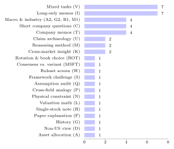
Every answer is graded from 0 to 18 across six dimensions. Smooth prose earns nothing on its own. If an agent cites a blog instead of an SEC filing, or mixes strict accounting loss (GAAP net loss) with management’s adjusted cash profit (adjusted EBITDA), it loses points. On CoreWeave (C1, an analysis of the AI cloud provider), the memo must separate GAAP loss from adjusted EBITDA and compute three probability-weighted scenarios via python_calc. On Bitcoin mining (B1), it must separate marginal power, cash cost, and full depreciation cost, plus four dated on-chain KPIs. On Microsoft (MSFT), it must build an explicit numerical bridge from memory prices to Azure gross margin.
| Dimension | What the check verifies | Scale |
|---|---|---|
| 1. Completeness | Delivers a finished decision memo with no truncated sections | 0–3 |
| 2. Tool and data grounding | Calls primary filings or institutional databases rather than secondary blogs | 0–3 |
| 3. Sourced figures | Every key number is tied to a verifiable source and date | 0–3 |
| 4. Logic and counter-view | Clear reasoning chain plus explicit stress-testing of the opposite side | 0–3 |
| 5. Accounting caliber | Separates incompatible metrics (for example, GAAP loss vs. adjusted EBITDA) | 0–3 |
| 6. Task-specific coverage | Question-specific checklist (3 cost layers in B1, margin bridge in MSFT) | 0–3 |
| Total | Unweighted sum across all six rubric checks | 0–18 |
Here we made a deliberate choice that separates a live commercial system from a classroom paper. In a standard paper, we would split the 45 questions into a training set and a held-out test set. In our live service, all 45 questions act as our training and verifying set. Why? Because our real test set arrives every day in production: the next unseen question a client asks. Live user queries can go anywhere, so holding back half of 45 items would only blind us. Scores on the 45 questions give a health snapshot of our current harness. Live client feedback then drives the next round of changes.
To run rubric checks cheaply at scale, we use GLM-5.2 as our LLM-as-a-judge. Choosing GLM-5.2 is an economic decision: it is cheap enough for routine runs and smart enough for structured checking. GLM-5.2 averages 13.62/18 when writing memos itself, yet it grades 16.5–16.8/18 outputs from stronger models. Why can a weaker researcher still act as a reliable judge? The reason is verification–generation asymmetry: checking an answer against an explicit rubric is far easier than discovering the insight from scratch. When generating a memo, a model must plan multi-step searches and form an original variant view on its own. When judging, the investor rubric already lists the exact items to check. Evaluation thus becomes bounded checklist verification rather than open-ended research. Because GLM-5.2 also appears in our benchmark table, we still spot-check samples by hand to guard against self-preference bias.
3.2 Lightweight harness engineering
Once we could measure insight, we faced a practical resource constraint. We are a lean project, not a frontier lab. Today, one Mac Studio handles daily live data collection and serves three institutional investment teams. Training or fine-tuning large models is too expensive, too slow, and unnecessary when frontier models already reason well.
Therefore, we never touch model weights or hyperparameters. Instead, we optimize the harness — everything wrapped around the frozen model. The harness controls task breakdown, external tool use, adversarial checks, and stop rules. On top of our shared harness, different funds also request bespoke modules, such as custom web crawlers or retrieval over private internal notes. Keeping domain logic inside a modular harness lets one Mac Studio support three teams at minimal overhead.
3.3 RSI-inspired critic-assisted harness iteration
Even without weight training, debugging a multi-stage research harness by hand is exhausting. Reading long failure traces across dozens of questions takes days of human effort. To speed this up, we drew inspiration from frontier LLM research on recursive self-improvement (RSI) and model-supervising-model pipelines.
Frontier labs use critic models to score trajectories and update neural weights automatically. In our service, we adapt that idea into critic-assisted harness iteration. GLM-5.2 diagnoses failed traces against the locked rubric and merges structural fixes, while we spot-check merged diffs by hand.
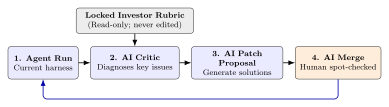
The critic flags recurring workflow failures and inspires general structural gates across four illustrative categories:
- Premature stopping. Early runs often quit on empty API results or wrote stub answers; tighter completion gates now force fallback searches and return stub memos to the writer.
- Skipped tool use. When drafts asserted financial ratios from memory instead of filings or
python_calc, workflow gates required primary tool loops and unseated-claim checks before drafting. - Missing citations or caveats. When ledger links or risk caveats vanished during drafting, we added post-draft citation verifiers, and later deterministic source-ID linking in Simao 2.
- Length and format drift. When outputs grew bloated, truncated, or skipped counter-views, structural checks enforced required memo sections (summary, risks, conclusion) and length bounds.
Because we use all 45 questions as one verifying bank without a held-out split, editing the harness on these traces could risk test-set leakage. If a patch injected domain hints — such as “always split three Bitcoin cost layers” — it would overfit single questions and inflate the results table. To prevent this, we enforce two strict rules. First, the investor rubric stays read-only. Second, merge rules and human spot-checks only allow question-agnostic structural gates — such as stop rules, tool checks, length bounds, and format schemas — and revert any item-specific hints.
4. System architecture: two generations of design
Guided by our rubric and critic-assisted harness iteration, we built two generations of architecture.
| Component | Simao 1 (API-driven pipeline) | Simao 2 (subscription CLI harness) |
|---|---|---|
| Execution driver | Custom Python state machine calling LLM APIs per stage | OpenAI Codex CLI session driven by skill, checks, and MCP |
| Loop flexibility | Fixed stages; at most 1 return wave (up to 4 new claims) | Dynamic; rewrites the plan mid-thread if evidence breaks the frame |
| Red-teaming | Parallel Support and Attack agents per claim (24-call cap) | Isolated sub-agents; the red team is blind to the support card |
| Context handling | Compresses old tool outputs past 80k characters; keeps the last 3 full | Separate sessions for research, writing, and audit; carry-packs |
| Citation integrity | Post-draft check flags missing links (does not rewrite) | MCP assigns numeric URL IDs; code expands IDs into links |
| Numerical audit | Single-pass writer from the evidence ledger | Fresh blind session checks internal math (1 retry on conflict) |
| Cost structure | Per-token API billing ($0.24–$7.40 / query) | $0 marginal query cost inside a flat monthly subscription |
4.1 Simao 1: hand-built API pipeline and the cost wall
Simao 1 is a deep-research pipeline written from scratch in Python. Our Python controller owns the stage order and stop caps, while the LLM chooses tools and claims inside each stage:
- Scout. A short tool loop (max 2 rounds or 6 calls) checks basic facts and spots where sources disagree.
- Forge. With tools turned off, the model turns those tensions into 3 to 6 falsifiable claims.
- Parallel Support and Attack. Two agents run per claim — one builds the case, and one attacks it using filings and
python_calc(max 10 rounds or 24 calls each). - Adjudicate. With tools off, the model weighs both sides. It may send up to 4 new claims back to Support and Attack once.
- Memo and citation check. The model writes the memo from the verified ledger. A final check flags missing citations or dropped caveats and appends up to 8 open questions.
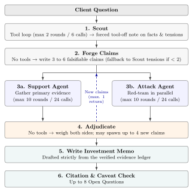
Simao 1 runs cleanly on one Mac Studio and lets us swap model APIs — MiniMax-M3, GLM-5.2, or Claude Opus 4.8 — with one config line. Yet live client use quickly exposed two flaws. First, the Python state machine is rigid: it cannot rewrite its initial plan if early evidence breaks the question’s frame, and it drops any new lead after one return wave. Second, API cost collided with customer behavior. We recommended GLM-5.2 at $1.59 per question, but hedge-fund analysts always picked Claude Opus 4.8 for its sharper reasoning. Because Simao 1 sends long contexts across parallel sub-agents, one Claude Opus 4.8 run averaged $7.40 (885k input and 119k output tokens). At $7.40 per query, heavy daily use breaks unit economics.
4.2 Simao 2: token-plan engineering and a real-world setback
That cost wall pushed us to design Simao 2. Frontier labs sell flat monthly subscriptions with large token allowances, whereas APIs bill every token. Simao 2 embeds Simao 1’s exact adversarial method inside a subscription CLI harness — practical “token maxing” that drops marginal query cost to zero. Instead of per-step API calls, we wrap the CLI host with a research skill (workflow rules plus optional monopoly, compounder, or bottleneck lenses), structural checks, and a blind audit session, while serving all 53 financial tools over MCP.
Deploying Simao 2 also taught us a real lesson about vendor risk. We first built Simao 2 on Claude Code, where early results were strong. Then our Claude account was suspended without warning. With three client teams sending live requests, we could not go offline and wait for an appeal. We immediately migrated the skill, checks, and MCP server onto OpenAI Codex CLI (running GPT-6-Astra). Because our research rules sat cleanly above the host CLI, the switch preserved client service without changing our methodology.
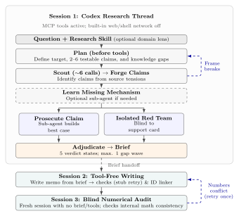
Codex also behaves more flexibly than Simao 1. When scouting breaks an initial assumption, Codex rewrites its plan mid-thread. In a live satellite-platform study, a financial page listed headline revenue that was mostly pre-delivery customer prepayments; Simao 2 caught that detail and refused to plug it into a naive sales multiple. On a valuation follow-up, it cited the confirmed company release while keeping an unconfirmed higher rumor clearly labeled beside it. Where two customer contracts conflicted — one holding options, another planning to multi-source — it kept both facts visible.
5. Results
We evaluated all configurations across the 45-question bank using our 18-point rubric (810 points per run). The three Simao 1 rows share the exact same controller and tool caps, isolating model capability. Because Simao 2 pairs Codex CLI with GPT-6-Astra, its score reflects the combined host-and-model system rather than a single-model ablation. Likewise, as an Option 1 application study, we omit standalone web-chatbot baselines (for example, raw ChatGPT or Claude) and component ablations because external bots cannot reach our custom crawlers, non-US filing feeds, or client-private data.
| System | Model | Mean | Total | 18/18s | Range (SD) | Min/Q | Tokens (in/out) | Cost/Q |
|---|---|---|---|---|---|---|---|---|
| Simao 1 | MiniMax-M3 | 10.18 | 458/810 | 0/45 | 6–14 (2.05) | 10.8 | 642k / 41k | $0.24 |
| Simao 1 | GLM-5.2 | 13.62 | 613/810 | 0/45 | 10–16 (1.53) | 18.4 | 905k / 74k | $1.59 |
| Simao 1 | Claude Opus 4.8 | 16.78 | 755/810 | 7/45 | 14–18 (0.85) | 26.7 | 885k / 119k | $7.40 |
| Simao 2 | GPT-6-Astra | 16.47 | 741/810 | 6/45 | 13–18 (1.12) | 31.8 | n.a. (CLI) | $0 (plan) |
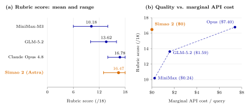
Within Simao 1, weaker models fail on accounting caliber and side-taking even when they call the right tools. MiniMax-M3 ($0.24) stops its tool loop early and averages 10.18/18 with zero full marks. On Bitcoin mining (B1), it called crypto_hashrate and reported cash cost as full cost, ignoring its own attack agent’s warning. GLM-5.2 ($1.59) reaches 13.62/18 and properly separates GAAP loss from adjusted EBITDA on CoreWeave (C1), yet it misses probabilities and skips the quantitative margin bridge on Microsoft. Claude Opus 4.8 reaches 16.78/18 with seven perfect 18/18 scores, computing full margin bridges and dropping broken theses when challenged on S1. However, Claude generates 119k output and thinking tokens per run, pushing API cost to $7.40.
| Item | Task focus | MiniMax | GLM-5.2 | Opus 4.8 | Simao 2 | Primary discriminator |
|---|---|---|---|---|---|---|
| B1 | Bitcoin mining cost | 8/18 | 14/18 | 18/18 | 18/18 | 3 cost layers + shutdown math |
| C1 | CoreWeave memo | 11/18 | 14/18 | 17/18 | 17/18 | GAAP vs. EBITDA + 3 scenarios |
| MSFT | AI capex and margin | 9/18 | 13/18 | 17/18 | 16/18 | Numerical memory-to-Azure bridge |
Simao 2 resolves that cost-quality trade-off. GPT-6-Astra on Codex CLI totals 741/810 (16.47/18) with six perfect 18/18 scores at zero marginal API cost. Because Simao 2 is still under active development and adapting its skills and checks to Codex CLI after the live migration, its overall score remains slightly below the top Simao 1 run (16.78/18). Even so, on CoreWeave (C1, 17/18), Session 3’s blind math audit caught a free-cash-flow mismatch between the summary and valuation table and fixed it on retry; on S1, Codex rewrote its plan mid-thread when the supply frame broke. It trailed Opus by one point on Microsoft (16/18) only because its bear case held enterprise seat pricing static. Operationally, its main trade-off is runtime: 31.8 minutes per question versus 26.7 minutes for Claude, since three sequential CLI sessions wait for full text blocks. For deep fundamental research, trading five extra minutes to eliminate a $7.40 per-query bill is highly practical.
6. Implementation details
Both systems share one tool and data backend on a single Mac Studio serving three client teams.
6.1 Shared 53-tool registry and daily Mac Studio ingestion
Our tool catalog spans six groups: listed companies (22 tools across SEC EDGAR, HKEX, CNINFO, and EDINET), macro (4), crypto and prediction markets (10), news (4), papers/code/history (8), and general/compute (5, including python_calc). Scheduled daily jobs on the Mac Studio ingest live sector indicators — GPU rental rates, new sell-side and industry reports, and Polymarket odds — while isolating client-specific crawlers and private retrieval indexes per fund. The full identifier list is in the appendix.
6.2 Runtime guardrails in Simao 1 and Simao 2
In Simao 1, Support and Attack agents start with only four base tools (web_search, fetch_url, wikipedia_lookup, python_calc) and dynamically request domain tools from the 53-tool catalog by name. Traces exceeding 80,000 characters trigger rolling compression that summarizes old outputs while preserving the last 3 tool results verbatim. If Forge produces fewer than 2 claims, Python promotes Scout’s tensions or injects 3 generic claims. An empty evidence ledger triggers a top-level warning banner, and multi-turn follow-ups pass the prior memo and ledger into Scout.
In Simao 2, strict sandboxing prevents hallucinated evidence inside Codex CLI. We disable Codex’s native web search and block network access in both the shell and the Python scratchpad, forcing all external data through our MCP server. Every fetched URL receives a permanent integer ID; the writer cites only IDs, and deterministic post-processing expands them into verified links. In Session 1, no claim can enter the brief unless an isolated red-team sub-agent tried to unseat it, and Adjudicate assigns one of five explicit states: supported, weakly supported, qualified, contradicted, dropped. If a long memo times out, a fallback writes a concise briefing from the verified brief. Across follow-up turns, transcripts exceeding context budgets compress into carry-packs with intact citation IDs.
7. Demo
Tamarix Research is live in production at tamarixresearch.com, actively serving three investment teams. Because the live workspace hosts confidential client queries, custom crawlers, and proprietary research lenses, we cannot share guest credentials. Instead we provide two recorded videos. Simao 1 and Simao 2 share the same user interface, so one product demo is enough. A second video is the full project presentation: the architecture walkthrough plus the demo. Below the video links, live product screenshots walk through the agent workflow, the client workspace, bespoke sector data feeds, and Simao 2 in client production. Where a generated memo references sensitive client data, those passages are anonymized and masked in blue.
- Simao 1 demo video (same user interface as Simao 2) URL to be added
- Project presentation (full talk + demo) URL to be added
7.1 Agent workflow in action
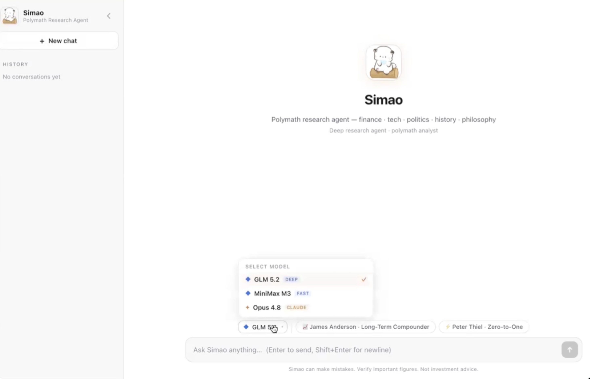
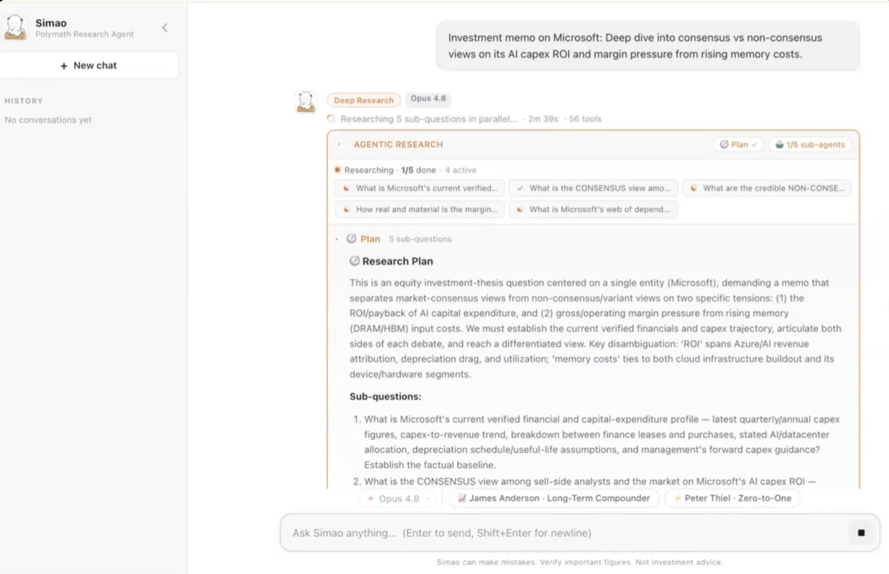

7.2 Client workspace dashboard
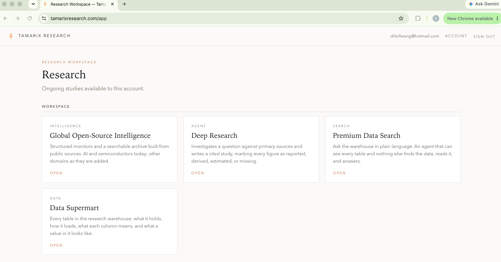
7.3 Bespoke client data: global chip tracking and AI news
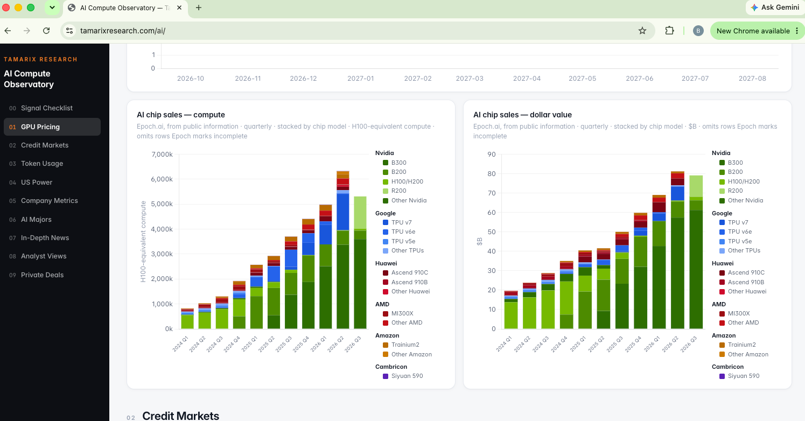
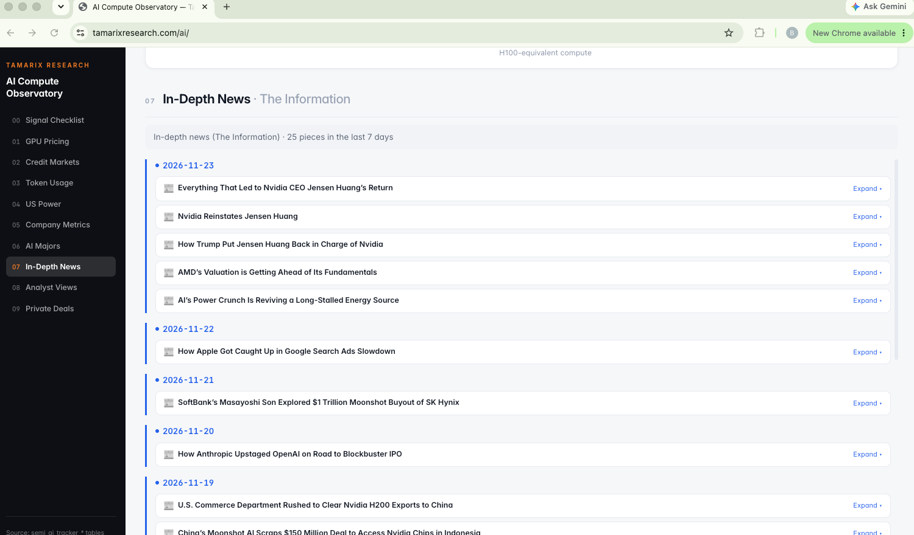
7.4 Simao 2 in client production
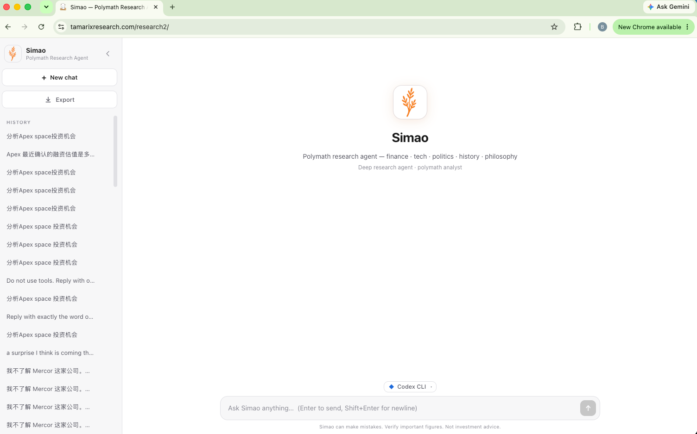
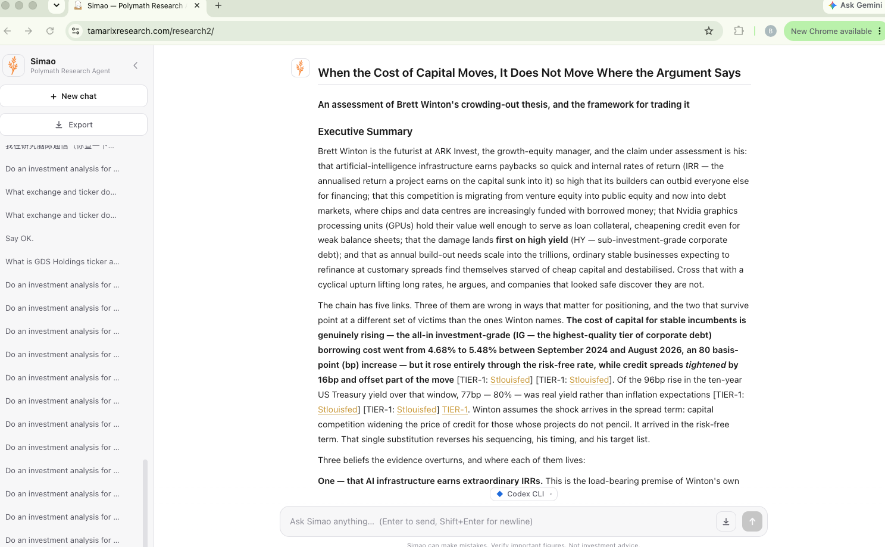
8. Conclusion
Building Tamarix Research showed both the value of academic methods and the gap between papers and live products. Academic rigor gave us our core tools. We replaced noisy stock-return backtests with a 45-question investor rubric and scored runs cheaply with GLM-5.2. We also adapted frontier RSI ideas into critic-assisted harness iteration, restricting edits to question-agnostic structural gates without touching model weights.
At the same time, real-world constraints reshaped every engineering decision. Our 45 questions act as a living verification bank, while unseen daily client queries form the real out-of-sample test. Simao 1 proved that Claude Opus 4.8 delivers real insights (16.78/18), but client preference for the top model created a $7.40 per-query bill. Moving that workflow into Simao 2 on Codex CLI — even surviving a sudden Claude Code suspension — kept top quality (16.47/18) inside a flat monthly plan. Combining rigorous evaluation with pragmatic harness engineering turned a strong LLM into a viable institutional research service.
References
- Anthropic. Model Context Protocol. 2024. modelcontextprotocol.io.
- Jiawei Gu et al. A Survey on LLM-as-a-Judge. arXiv:2411.15594, 2024.
- Yuxuan Huang et al. Deep Research Agents: A Systematic Examination and Roadmap. arXiv:2506.18096, 2025.
- Haohang Li et al. InvestorBench: A Benchmark for Financial Decision-Making Tasks with LLM-based Agents. ACL, 2025.
- Reiichiro Nakano et al. WebGPT: Browser-Assisted Question-Answering with Human Feedback. arXiv:2112.09332, 2021.
- Noah Shinn et al. Reflexion: Language Agents with Verbal Reinforcement Learning. arXiv:2303.11366, 2023.
- Yijia Xiao et al. TradingAgents: Multi-Agents LLM Financial Trading Framework. arXiv:2412.20138, 2024.
- Hongyang Yang et al. FinRobot: An Open-Source AI Agent Platform for Financial Applications. arXiv:2405.14767, 2024.
- Shunyu Yao et al. ReAct: Synergizing Reasoning and Acting in Language Models. ICLR, 2023.
- Yangyang Yu et al. FinMem: A Performance-Enhanced LLM Trading Agent with Layered Memory and Character Design. arXiv:2311.13743, 2023.
- Yangyang Yu et al. FinCon: A Synthesized LLM Multi-Agent System with Conceptual Verbal Reinforcement. arXiv:2407.06567, 2024.
- Wentao Zhang et al. A Multimodal Foundation Agent for Financial Trading. KDD, 2024.
Appendix
A. Benchmark schema and sample rubrics
Each item stores id, question (translated from Chinese investor prompts for reporting), label (original or follow_up), and mode (deep for all 45 items). Two multi-turn items also store session_from: Q1 resumes K2 to audit hidden assumptions, and S1 resumes K4 to break its analytical frame. Because the prompts originate from live fund watchlists and proprietary investor frameworks, verbatim questions remain confidential. Live cases in the architecture section are anonymized, while the public-market items name the specific thesis angle (for example, memory-cost pass-through in MSFT) for the agent to verify and stress-test.
| Category | Research task | Count |
|---|---|---|
| Asset allocation (A) | Long-horizon cross-asset allocation view | 1 |
| Non-US view (D) | Identify blind spots in US-centric market consensus | 1 |
| History (G) | Historical counterfactual analysis requiring a firm stance | 1 |
| Paper explanation (F) | Technical breakdown of an academic paper with a verified URL | 1 |
| Single-stock note (H) | Institutional-grade initiation note on one listed firm | 1 |
| Cross-market insight (K) | Detect mispricing or structural breaks across linked markets | 2 |
| Valuation math (L) | Full DCF or multiples valuation with explicit step-by-step math | 1 |
| Reasoning method (M) | Bayesian updating and 1st/2nd/3rd-order effect separation | 2 |
| Physical constraint (N) | First-principles engineering or physics bottleneck | 1 |
| Cross-field analogy (P) | Structural mapping from an external discipline onto a market | 1 |
| Assumption audit (Q) | Multi-turn follow-up from K2, auditing prior assumptions | 1 |
| Framework challenge (S) | Multi-turn follow-up from K4, attacking the prior frame | 1 |
| Company memos (T) | Full investment memo judging whether a company is a buy now | 4 |
| Claim archaeology (U) | Audit past public predictions and extract error patterns | 2 |
| Mixed tasks (V) | Fact bundles, behavioral finance puzzles, and methodology drills | 7 |
| Ruleset screen (W) | Apply a multi-gate short-selling checklist to a target | 1 |
| Focused company questions (C) | Focused long-or-short thesis on one named company | 4 |
| Long-only memos (I) | Binary buy/pass memo with an explicit target entry price | 7 |
| Macro and industry | AI capex payback, geopolitics, Bitcoin mining cost, US fiscal math | 4 |
| Consensus vs. variant (MSFT) | Priced-in consensus vs. variant view, plus a margin bridge | 1 |
| Rotation and book choice (ROT) | Sector rotation across three names in a concentrated book | 1 |
| Total | 45 |
Question-specific checks (dimension 6).
- C1 (CoreWeave). Quantified bull and bear cases; GAAP net loss separated from adjusted EBITDA; 3 scenarios summing to 1.0 with expected value via
python_calc; at least 3 company-specific risks; revenue growth, capex, free cash flow, debt, valuation multiple, and a clear recommendation. - B1 (Bitcoin mining). Three cost layers (marginal power, cash operating cost, full cost with ASIC depreciation); rig shutdown price formula; hash-ribbon signal; at least 4 dated on-chain KPIs with primary sources.
- MSFT. Explicit list of priced-in consensus; a non-consensus variant on the AI capex payback horizon; an arithmetic bridge from DRAM/HBM memory prices to server bill of materials and Azure gross margin; stress-tested bull and bear catalysts. The prompt itself asks the agent to verify memory-cost pass-through.
B. Tool registry and guardrails
| Group | Sources | Tool identifiers |
|---|---|---|
| Listed companies (22) | SEC EDGAR, company IR, HKEX, CNINFO, EDINET, FMP, Logmi | equity_financials equity_statistics equity_fundamentals sec_filings sec_read_filing earnings_transcript company_ir stock_quote stock_history financial_statements equity_statements_fmp equity_insider_trading equity_institutional equity_hk_snapshot cninfo_filings cninfo_investor_relations hk_filings hk_earnings_notes edinet_filings edinet_download logmi_transcript read_pdf |
| Macro (4) | FRED, World Bank, China NBS | fred_series macro_indicators worldbank_indicator china_macro |
| Crypto and prediction markets (10) | Binance, on-chain feeds, Polymarket, Kalshi, Manifold, A-shares | crypto_market binance_klines crypto_fng crypto_hashrate crypto_network_stats crypto_cycle_indicators prediction_market kalshi_markets manifold_markets china_stock |
| News (4) | Finnhub, RSS, GDELT | news_search finnhub_news rss_headlines gdelt_events |
| Papers, code, history (8) | arXiv, OpenAlex, Crossref, GitHub, HN, Wikidata, Gutenberg, Wayback | arxiv_search openalex_search crossref_search github_search hackernews_search wikidata_query gutendex_books wayback_snapshot |
| General and compute (5) | Web, Wikipedia, local skills, Python sandbox | web_search fetch_url wikipedia_lookup load_skill python_calc |
| Mechanism | Simao 1 | Simao 2 |
|---|---|---|
| Scout cap | Hard stop at 2 rounds or 6 calls; forces a tool-off summary | About 6 MCP calls opening primary records and logging tensions |
| Claim fallback | 3–6 claims; if fewer than 2, copies Scout tensions; if 0, injects 3 generic claims | Pre-tool plan defines 2–6 claims; rewrites the plan if the frame breaks |
| Adversarial agents | 2 parallel agents per claim; max 10 rounds or 24 calls each | Prosecute plus a blind red team; unchallenged claims are barred from the brief |
| Re-investigation | At most 1 return wave (≤ 4 claims) | Five verdict states plus at most 1 gap-closing wave |
| Context overflow | Above 80,000 characters, summarize older outputs; keep the last 3 verbatim | Separate sessions; multi-turn overflow compressed into a carry-pack |
| Network and URLs | Post-draft citation check; empty-ledger warning banner | Native web and shell network disabled; MCP integer IDs expanded by code |
| Memo failure / audit | Appends up to 8 open questions; the checker never rewrites prose | Stub returns to the writer; Session 3 allows 1 retry |
C. API pricing and case diagnostics
Costs sum list rates across every call in the pipeline without prompt-caching discounts. No single call exceeded 512k tokens, so MiniMax’s higher long-context tier was never triggered. For Claude Opus 4.8, output tokens include extended thinking tokens.
| Model | Mean in | Mean out | Price per 1M (in/out) | Cost/Q | Notes |
|---|---|---|---|---|---|
| MiniMax-M3 | 642k | 41k | $0.30 / $1.20 | $0.24 | All calls under 512k; standard tier |
| GLM-5.2 | 905k | 74k | $1.40 / $4.40 | $1.59 | No cache discount applied |
| Claude Opus 4.8 | 885k | 119k | $5.00 / $25.00 | $7.40 | Output includes thinking tokens |
| Case | MiniMax-M3 | GLM-5.2 | Claude Opus 4.8 | Simao 2 (GPT-6-Astra) |
|---|---|---|---|---|
| B1 mining | 8/18. Called hashrate data but treated cash cost as full cost and ignored the attack warning. No shutdown math. | 14/18. Split 3 cost layers and gave shutdown bands for 2 rigs; stopped at 3 on-chain KPIs. | 18/18. All 3 layers, shutdown formula, hash ribbons, 4 dated KPIs, and a critique of media headlines. | 18/18. All 3 layers, scratchpad shutdown math, hash ribbons, and 4 KPIs linked by MCP source IDs. |
| C1 CoreWeave | 11/18. Secondary web multiple; no bear numbers; mixed GAAP net loss with adjusted EBITDA. | 14/18. Separated GAAP and EBITDA from the filing; only 2 scenarios, no probabilities; unlinked risks. | 17/18. 3 scenarios summing to 1.0 via python_calc; linked concentration to debt; one secondary multiple (−1). |
17/18. 3 scenarios; Session 3 caught and fixed a free-cash-flow mismatch; one secondary debt note (−1). |
| MSFT | 9/18. Restated OpenAI/Copilot consensus; mentioned memory prices with no margin math. | 13/18. Variant was already sell-side consensus; stated that memory “pressures” cost without computing the bridge. | 17/18. Clear payback variant and a memory-to-Azure bridge; used a one-quarter spot DRAM price (−1). | 16/18. Clear variant and a scratchpad bridge; spot DRAM (−1) and a static bear case on seat pricing (−1). |
| S1 frame break | Added a verbal hedge that demand “could matter” while keeping the supply-only conclusion. | Listed a demand-shock path beside the supply path without choosing or re-ranking holdings. | Dropped the invalidated supply-only thesis and re-ranked target stocks under an AI capex cut. | Triggered a mid-thread frame break, rewrote the plan, and re-ranked holdings under the capex cut. |